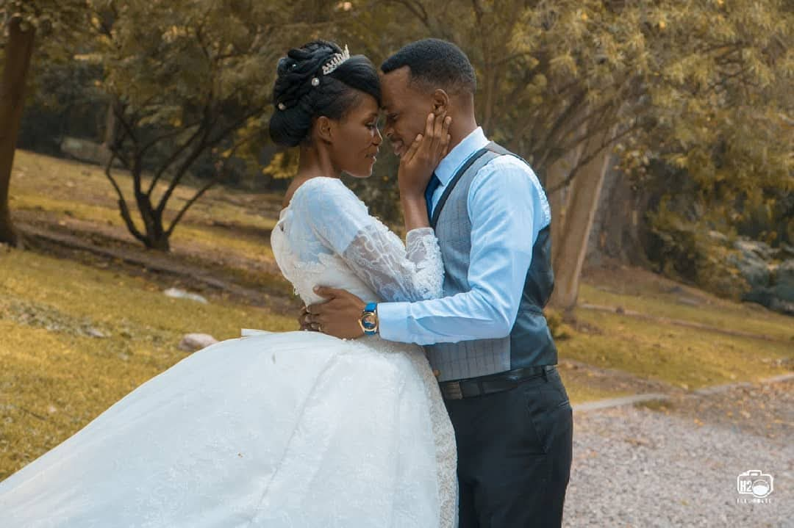
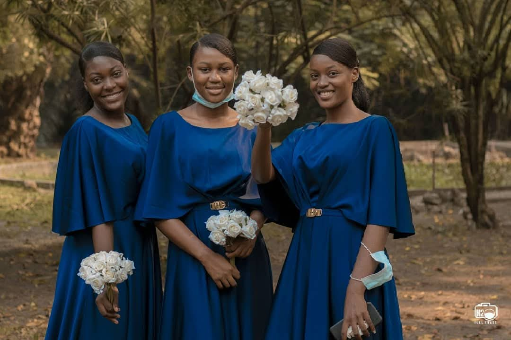
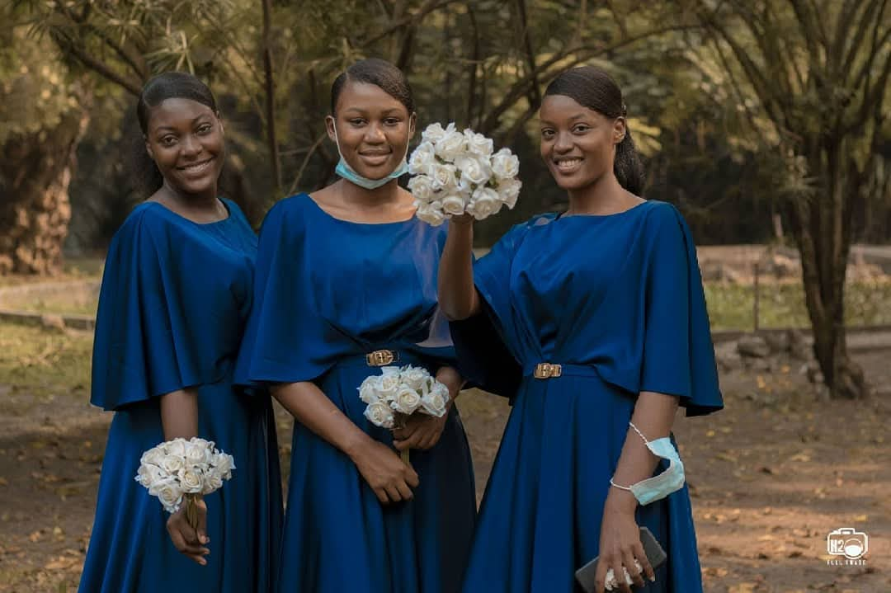

Nos Services
photographie
Chaque clichés raconte votre histoire unique.
Vidéo
Réalisation de vidéos de haute qualité pour tous vos évenements.
Design
Des concepts innovants pour une communication visuelle efficace.


Formation Professionnelle
Transformez votre passion en métier grâce à notre formation photo professionnelle !
Apprenez à capturer des moments uniques, maîtrisez les techniques modernes de la photographie,
et développez votre propre style artistique.
Que vous soyez débutant ou passionné confirmé,
nous vous accompagnons pour faire de vos clichés de véritables œuvres d'art.
Rejoignez-nous et révélez votre talent au monde !
 
